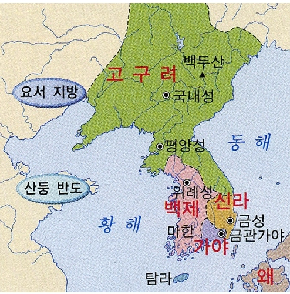

삼국시대 원본 지도 · 영토는 시대에 따라 변화합니다🚪 게임 입장
교사는 새 방을 만들고 코드를 알려 주세요. 학생은 자신의 아이패드에서 같은 주소로 접속해 코드를 입력합니다.
📜 수업 규칙
모든 거점은 중립으로 시작하며, 문제를 맞힌 팀의 색으로 바뀝니다. 상대 팀의 거점도 정답을 맞히면 빼앗을 수 있습니다. 4개 팀이 차례로 이동합니다. 교사가 주사위를 굴리면 해당 팀 학생들이 각자 기기에서 문제를 풀 수 있습니다. 정답을 맞힌 첫 번째 학생이 팀을 대표해 빈 땅을 확보하거나 상대 팀의 거점을 빼앗습니다. 교사는 다음 팀으로 넘기고, 원하는 시점에 게임을 마칩니다.
학생 문제는 교사의 승인 후 사용합니다. 수업용으로 정답과 해설을 교사가 확인해 주세요.